大觉寺
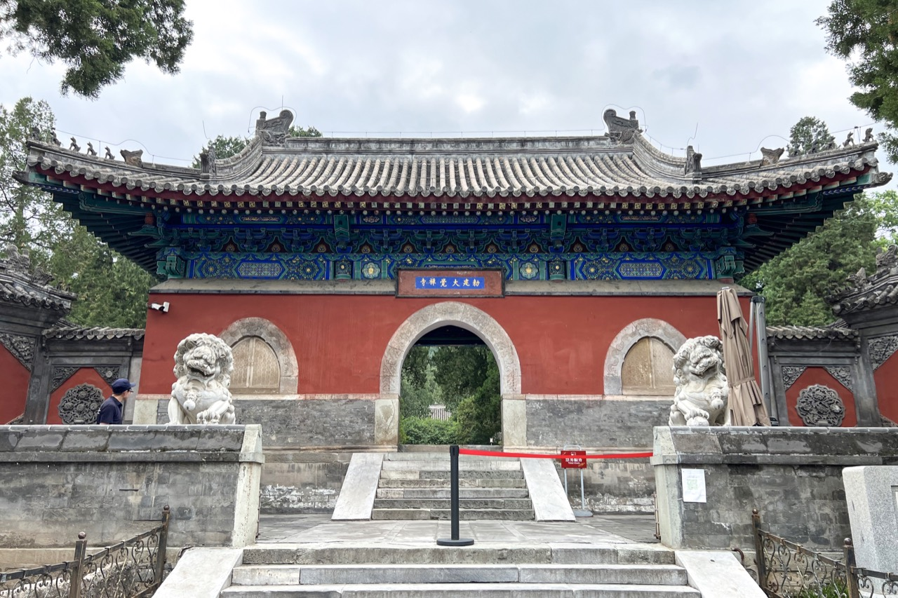
作品：Gate of Dajue Temple (20260521164759).jpg
摄影：N509FZ
拍摄日期（来源声明）：2026-05-21
.jpg){kind=link}
2026年大觉寺的历史实景局部；不代表场所全貌、当前季节、陈列或开放安排。
由来源原图等比例缩小，并进行JPEG压缩（质量参数72）；未裁切、重绘、去人物或换背景。成品为1280×853。页面按容器缩放、裁显；完整原图见来源。
照片及机械处理结果沿用各自标注的许可。保留原构图，仅按下列说明缩小和压缩。历史影像不代表当前开放、展览或季节；摄影者不因此为小程序背书。

作品：Gate of Dajue Temple (20260521164759).jpg
摄影：N509FZ
拍摄日期（来源声明）：2026-05-21
2026年大觉寺的历史实景局部；不代表场所全貌、当前季节、陈列或开放安排。
由来源原图等比例缩小，并进行JPEG压缩（质量参数72）；未裁切、重绘、去人物或换背景。成品为1280×853。页面按容器缩放、裁显；完整原图见来源。
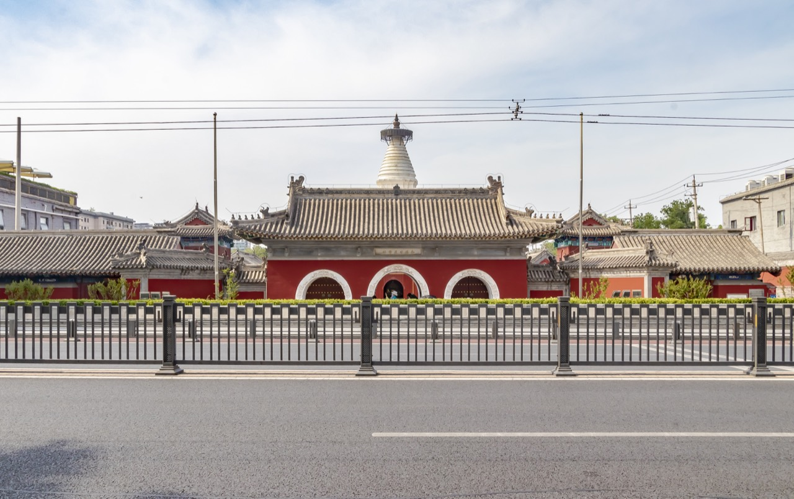
作品：北京妙应寺山门2021.jpg
摄影：ScareCriterion12
拍摄日期（来源声明）：2021-06-12
2021年白塔寺的历史实景局部；不代表场所全貌、当前季节、陈列或开放安排。
由来源原图等比例缩小，并进行JPEG压缩（质量参数72）；未裁切、重绘、去人物或换背景。成品为1280×804。页面按容器缩放、裁显；完整原图见来源。
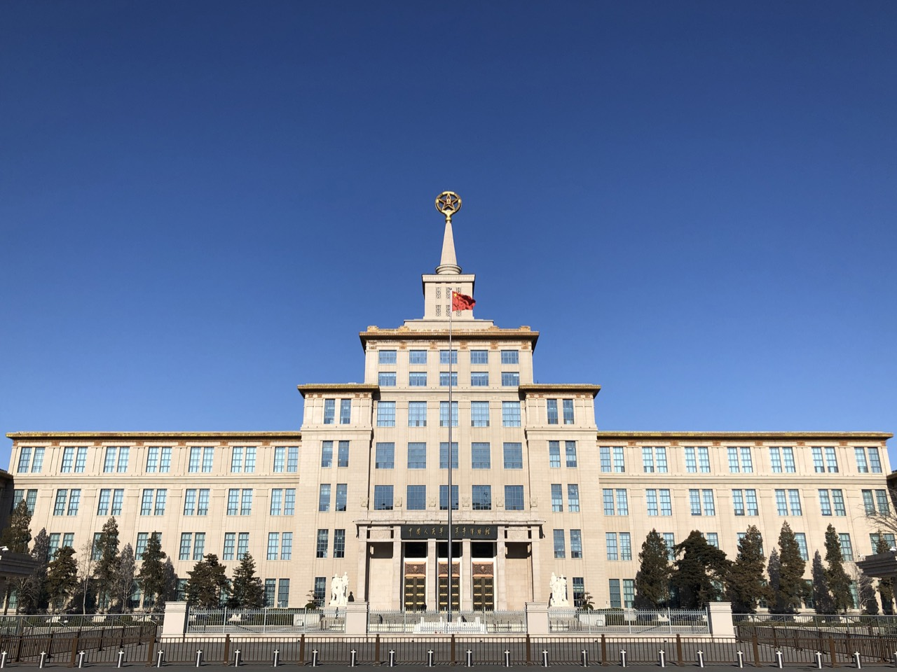
作品：2019 Chinese People's Revolutionary Military Museum.jpg
摄影：Wcr1993
拍摄日期（来源声明）：2019-12-30
2019年中国人民革命军事博物馆的历史实景局部；不代表场所全貌、当前季节、陈列或开放安排。
由来源原图等比例缩小，并进行JPEG压缩（质量参数72）；未裁切、重绘、去人物或换背景。成品为1280×960。页面按容器缩放、裁显；完整原图见来源。
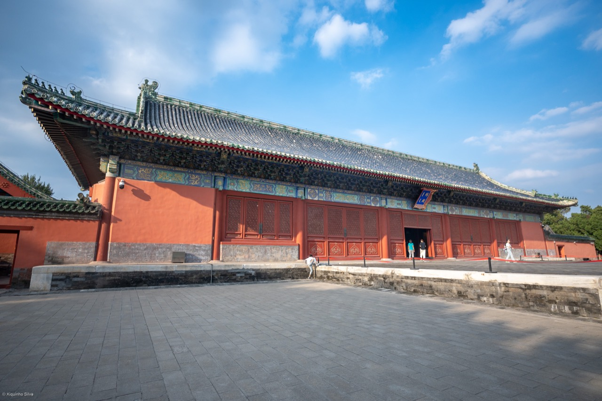
作品：Temple of Agriculture - 54791781139.jpg
摄影：xiquinhosilva
拍摄日期（来源声明）：2024-09-17
2024年北京古代建筑博物馆的历史实景局部；不代表场所全貌、当前季节、陈列或开放安排。
由来源原图等比例缩小，并进行JPEG压缩（质量参数72）；未裁切、重绘、去人物或换背景。成品为1280×853。页面按容器缩放、裁显；完整原图见来源。
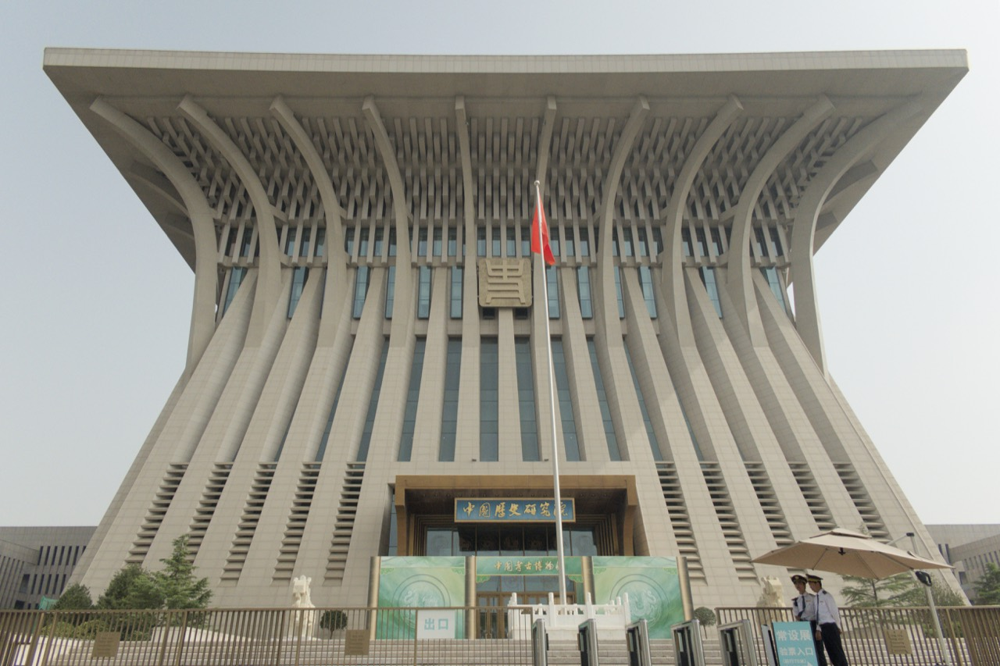
作品：Chinese Academy of History, 2024-06-22 01.jpg
摄影：Siyuwj
拍摄日期（来源声明）：2024-06-22
2024年中国考古博物馆的历史实景局部；不代表场所全貌、当前季节、陈列或开放安排。
由来源原图等比例缩小，并进行JPEG压缩（质量参数72）；未裁切、重绘、去人物或换背景。成品为1280×853。页面按容器缩放、裁显；完整原图见来源。
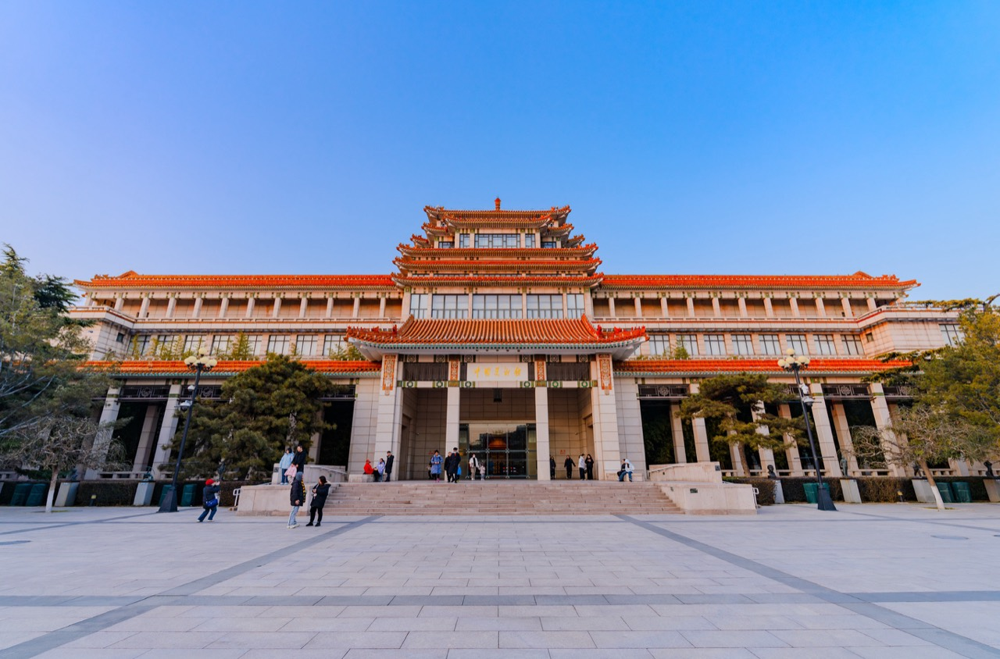
作品：National Art Museum of China facade.jpg
摄影：Jackiejackie123123
拍摄日期（来源声明）：2025-01-15
2025年中国美术馆的历史实景局部；不代表场所全貌、当前季节、陈列或开放安排。
由来源原图等比例缩小，并进行JPEG压缩（质量参数72）；未裁切、重绘、去人物或换背景。成品为1280×844。页面按容器缩放、裁显；完整原图见来源。
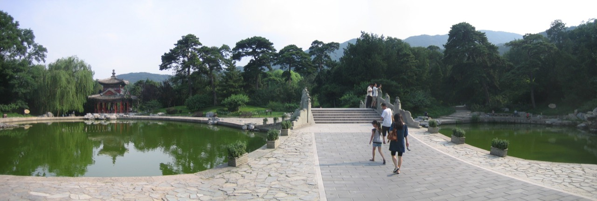
作品：Fragrance Hill park, Beijing, China - 香山，北京，中国 (10225830655).jpg
摄影：Romain Pontida
拍摄日期（来源声明）：2008-07-19
2008年香山公园的历史实景局部；不代表场所全貌、当前季节、陈列或开放安排。
由来源原图等比例缩小，并进行JPEG压缩（质量参数72）；未裁切、重绘、去人物或换背景。成品为1280×432。页面按容器缩放、裁显；完整原图见来源。
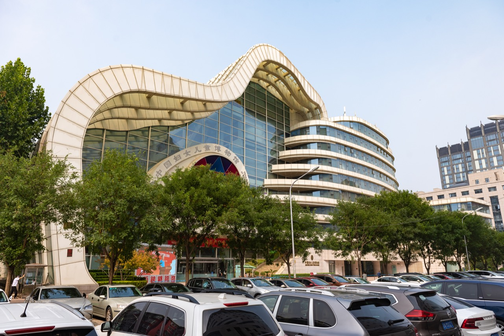
作品：China National Museum of Women and Children (20210909135508).jpg
摄影：N509FZ
拍摄日期（来源声明）：2021-09-09
2021年中国妇女儿童博物馆的历史实景局部；不代表场所全貌、当前季节、陈列或开放安排。
由来源原图等比例缩小，并进行JPEG压缩（质量参数72）；未裁切、重绘、去人物或换背景。成品为1280×853。页面按容器缩放、裁显；完整原图见来源。
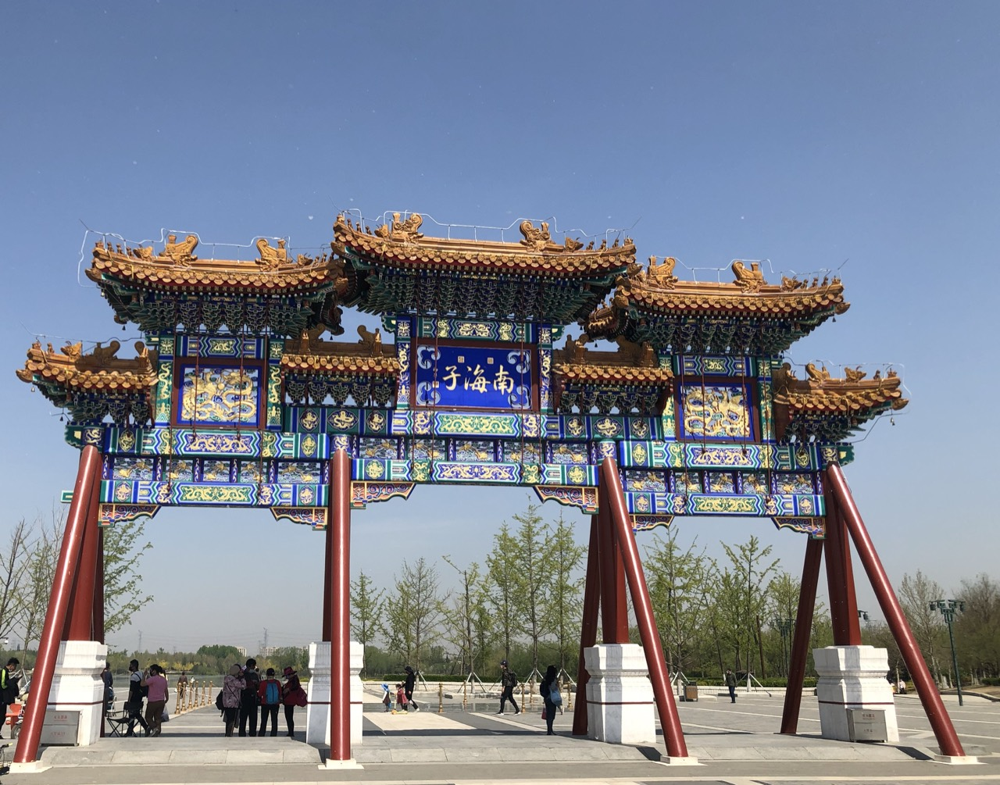
作品：南海子公园.jpg
摄影：Yanxutong1215
拍摄日期（来源声明）：2020-04-13
2020年南海子公园牌楼历史实景；仅为园区局部，不据此更改默认导航。
由来源原图等比例缩小，并进行JPEG压缩（质量参数72）；未裁切、重绘、去人物或换背景。成品为1280×1005。页面按容器缩放、裁显；完整原图见来源。
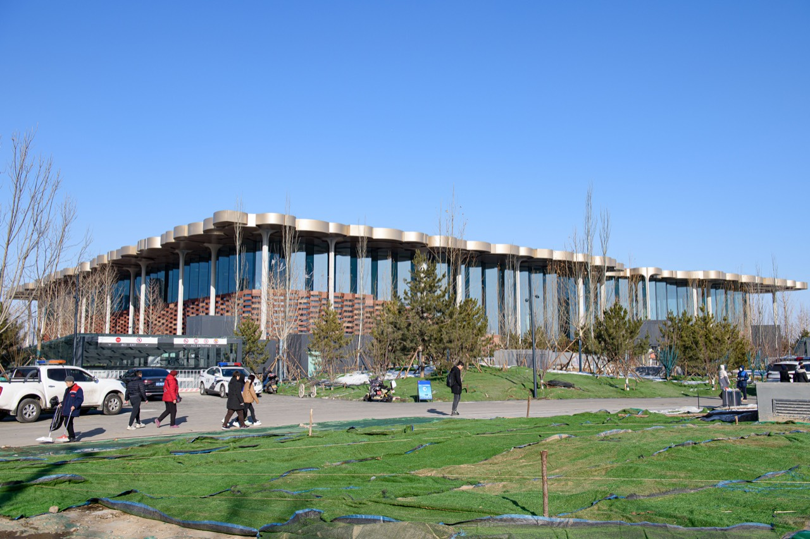
作品：Beijing Library (20231231140621).jpg
摄影：N509FZ
拍摄日期（来源声明）：2023-12-31
2023年底北京城市图书馆局部历史实景；照片不单独表示少年儿童馆空间，不代表当前陈列和开放安排。
由来源原图等比例缩小，并进行JPEG压缩（质量参数72）；未裁切、重绘、去人物或换背景。成品为1280×853。页面按容器缩放、裁显；完整原图见来源。
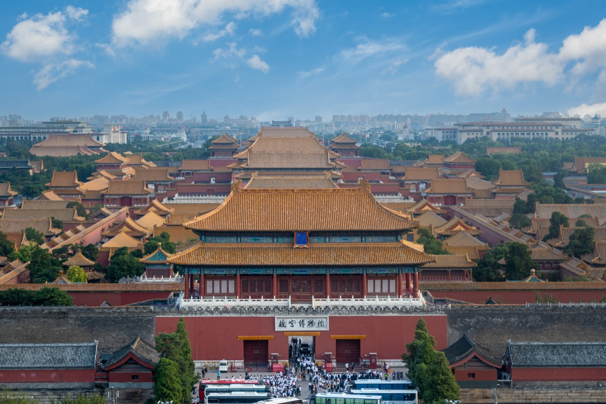
作品：景山公园俯瞰故宫 2024-09-16.jpg
摄影：xiquinhosilva
拍摄日期（来源声明）：2024-09-16
2024年从景山方向俯瞰故宫的历史全景；拍摄点不在故宫内，不代表当前开放范围。
由来源原图等比例缩小，并进行JPEG压缩（质量参数72）；未裁切、重绘、去人物或换背景。成品为1280×853。页面按容器缩放、裁显；完整原图见来源。
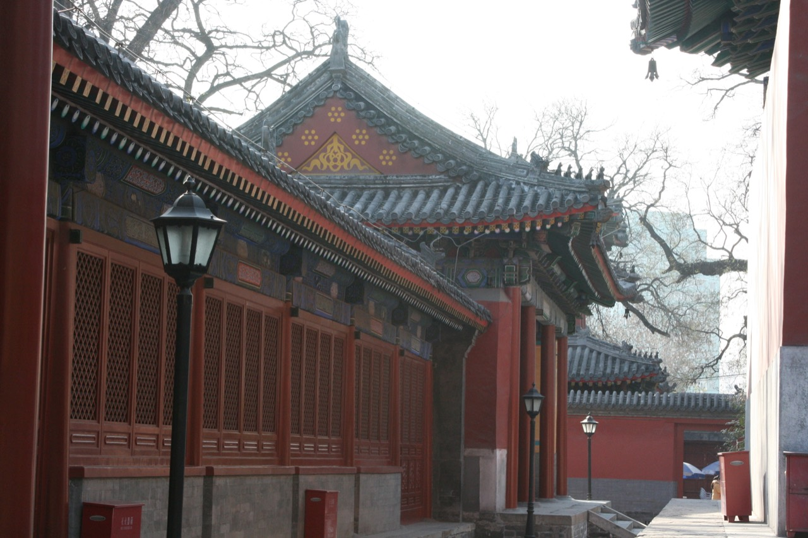
作品：Wanshou Temple pic 2.jpg
摄影：storyvillegirl
拍摄日期（来源声明）：2007-12-13
2007年万寿寺博物馆的历史实景局部；不代表场所全貌、当前季节、陈列或开放安排。
由来源原图等比例缩小，并进行JPEG压缩（质量参数72）；未裁切、重绘、去人物或换背景。成品为1280×853。页面按容器缩放、裁显；完整原图见来源。
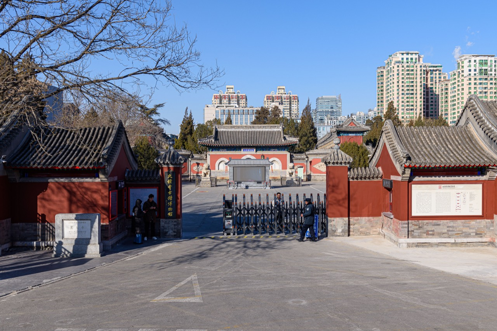
作品：Entrance of Grand Bell Temple (20240125142211).jpg
摄影：N509FZ
拍摄日期（来源声明）：2024-01-25
2024年大钟寺古钟博物馆的历史实景局部；不代表场所全貌、当前季节、陈列或开放安排。
由来源原图等比例缩小，并进行JPEG压缩（质量参数72）；未裁切、重绘、去人物或换背景。成品为1280×853。页面按容器缩放、裁显；完整原图见来源。
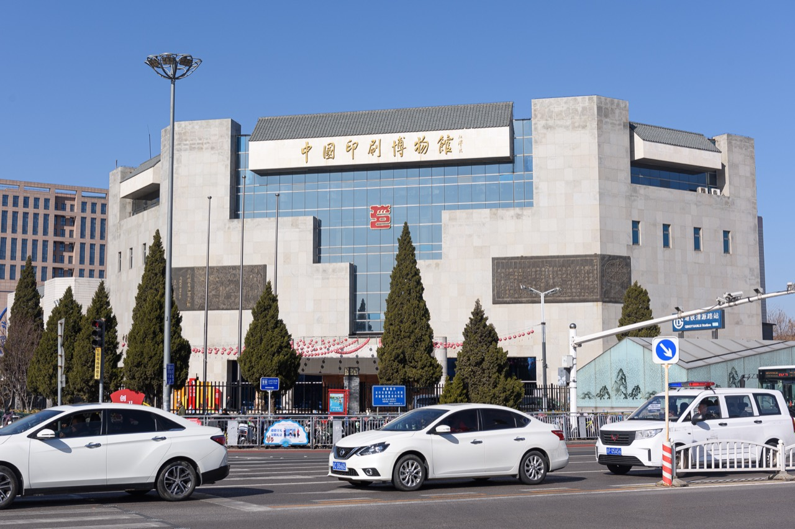
作品：China Printing Museum (20230224105034).jpg
摄影：N509FZ
拍摄日期（来源声明）：2023-02-24
2023年中国印刷博物馆的历史实景局部；不代表场所全貌、当前季节、陈列或开放安排。
由来源原图等比例缩小，并进行JPEG压缩（质量参数72）；未裁切、重绘、去人物或换背景。成品为1280×853。页面按容器缩放、裁显；完整原图见来源。
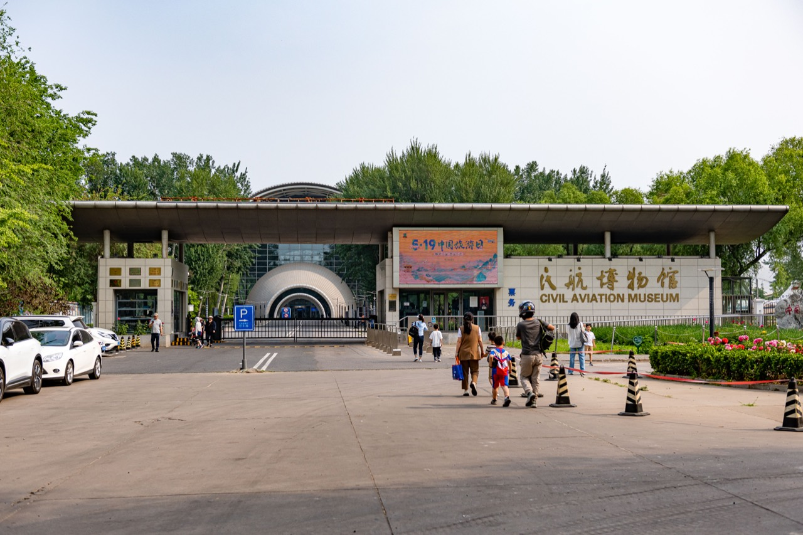
作品：Civil Aviation Museum of China (20240518153528).jpg
摄影：N509FZ
拍摄日期（来源声明）：2024-05-18
2024年民航博物馆的历史实景局部；不代表场所全貌、当前季节、陈列或开放安排。
由来源原图等比例缩小，并进行JPEG压缩（质量参数72）；未裁切、重绘、去人物或换背景。成品为1280×853。页面按容器缩放、裁显；完整原图见来源。
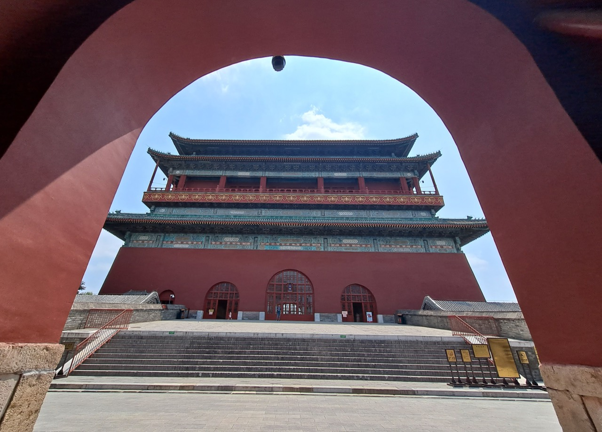
作品：Beijing Drum Tower 3.jpg
摄影：EditQ
拍摄日期（来源声明）：2023-07-11
2023年北京钟鼓楼的历史实景局部；不代表场所全貌、当前季节、陈列或开放安排。
由来源原图等比例缩小，并进行JPEG压缩（质量参数72）；未裁切、重绘、去人物或换背景。成品为1280×920。页面按容器缩放、裁显；完整原图见来源。
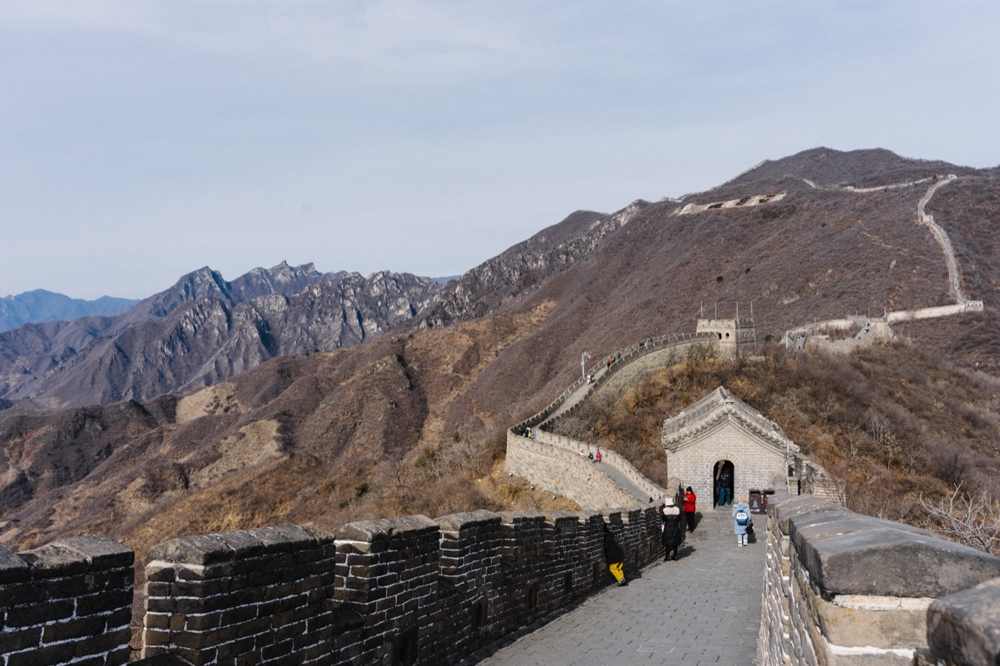
作品：The Mutianyu section of the Great Wall of China.jpg
摄影：Lloyd Tudor
拍摄日期（来源声明）：2024-02-19
2024年慕田峪长城的历史实景局部；不代表场所全貌、当前季节、陈列或开放安排。
由来源原图等比例缩小，并进行JPEG压缩（质量参数72）；未裁切、重绘、去人物或换背景。成品为1280×853。页面按容器缩放、裁显；完整原图见来源。
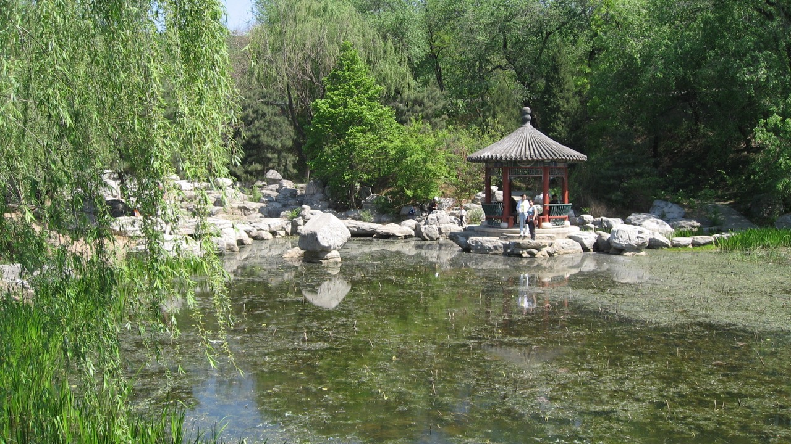
作品：入口映翠湖 - panoramio.jpg
摄影：Tiger@西北
拍摄日期（来源声明）：2009-04-26
2009年八大处公园的历史实景局部；不代表场所全貌、当前季节、陈列或开放安排。
由来源原图等比例缩小，并进行JPEG压缩（质量参数72）；未裁切、重绘、去人物或换背景。成品为1280×720。页面按容器缩放、裁显；完整原图见来源。
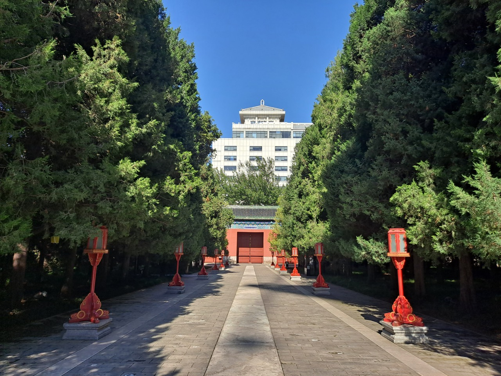
作品：北京月坛公园 1.jpg
摄影：호고호
拍摄日期（来源声明）：2026-07-11
2026年月坛公园的历史实景局部；不代表场所全貌、当前季节、陈列或开放安排。
由来源原图等比例缩小，并进行JPEG压缩（质量参数72）；未裁切、重绘、去人物或换背景。成品为1280×960。页面按容器缩放、裁显；完整原图见来源。
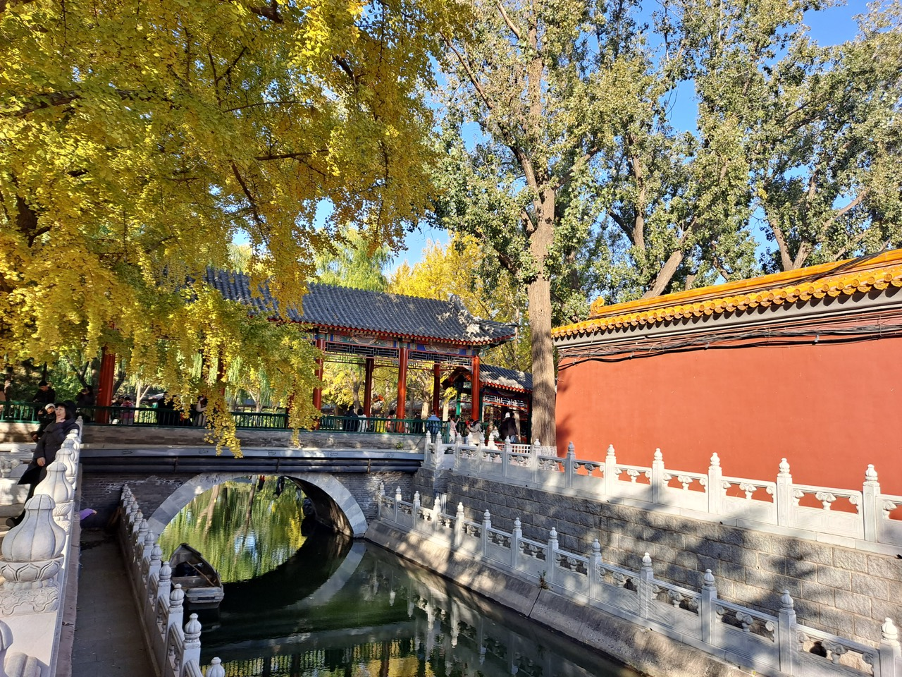
作品：Zhongshan Park, Beijing 7.jpg
摄影：EditQ
拍摄日期（来源声明）：2023-11-18
2023年中山公园的历史实景局部；不代表场所全貌、当前季节、陈列或开放安排。
由来源原图等比例缩小，并进行JPEG压缩（质量参数72）；未裁切、重绘、去人物或换背景。成品为1280×960。页面按容器缩放、裁显；完整原图见来源。
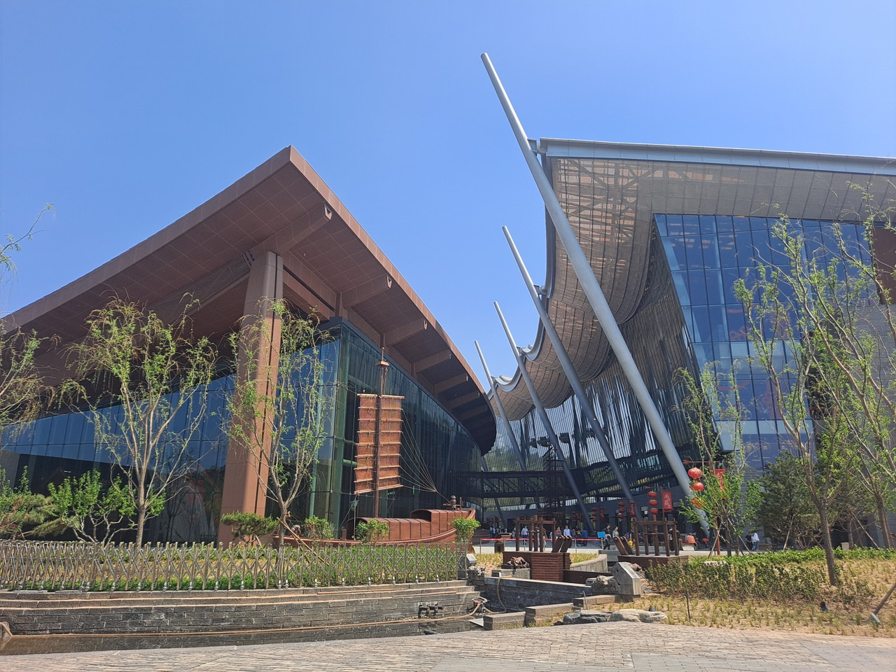
作品：The Grand Canal Museum of Beijing 1.jpg
摄影：E2568
拍摄日期（来源声明）：2024-05-02
2024年北京大运河博物馆（首都博物馆东馆）的历史实景局部；不代表场所全貌、当前季节、陈列或开放安排。
由来源原图等比例缩小，并进行JPEG压缩（质量参数72）；未裁切、重绘、去人物或换背景。成品为1280×960。页面按容器缩放、裁显；完整原图见来源。
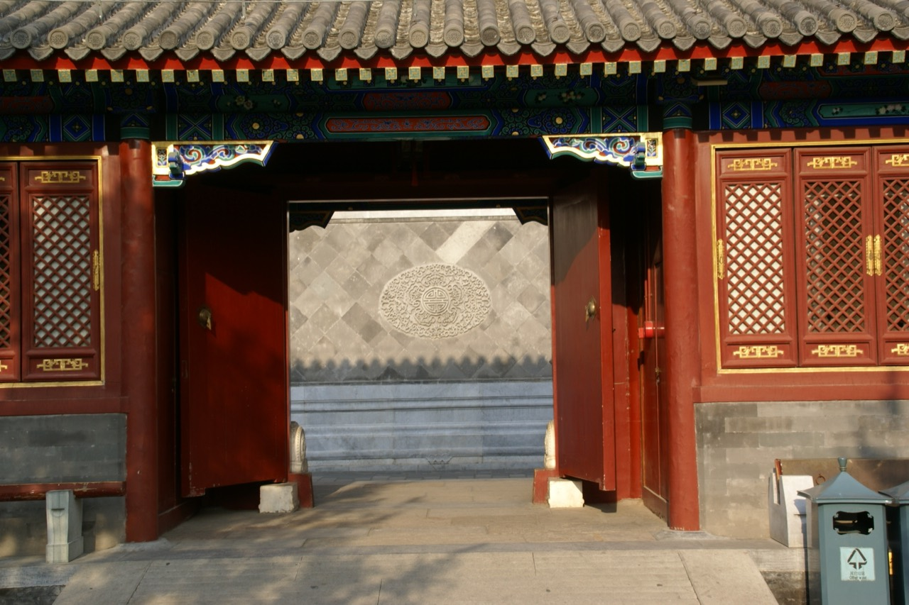
作品：2014.08.17.170330 Prince Gong's Mansion Beijing.jpg
摄影：Hermann Luyken
拍摄日期（来源声明）：2014-08-17
2014年恭王府博物馆的历史实景局部；不代表场所全貌、当前季节、陈列或开放安排。
由来源原图等比例缩小，并进行JPEG压缩（质量参数72）；未裁切、重绘、去人物或换背景。成品为1280×853。页面按容器缩放、裁显；完整原图见来源。
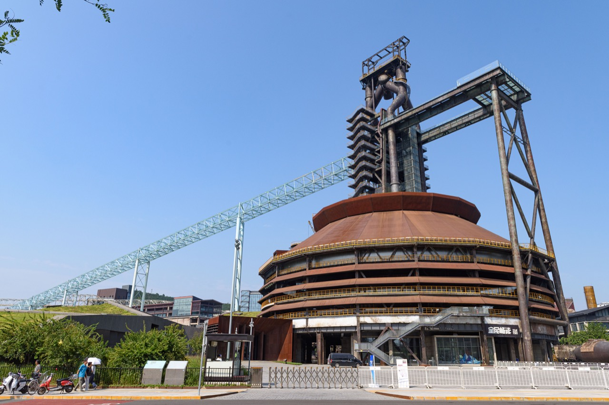
作品：No. 3 Blast Furnace of Shougang Park (20240916133522).jpg
摄影：N509FZ
拍摄日期（来源声明）：2024-09-16
2024年首钢园3号高炉历史外观；仅为北区工业遗存局部，不代表当前可进入范围。
由来源原图等比例缩小，并进行JPEG压缩（质量参数72）；未裁切、重绘、去人物或换背景。成品为1280×853。页面按容器缩放、裁显；完整原图见来源。
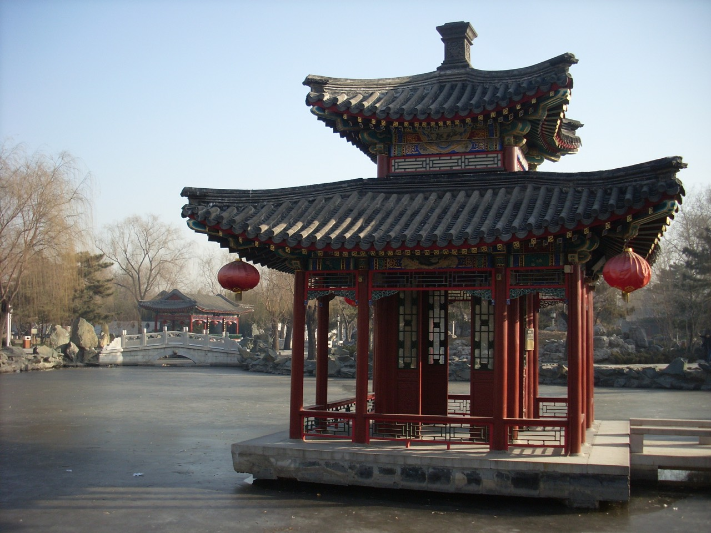
作品：Dicuiting, Daguanyuan.jpg
摄影：刻意
拍摄日期（来源声明）：2010-12-20
2010年12月北京大观园滴翠亭局部历史实景；不代表当前季节、冰况或公园全貌。
由来源原图等比例缩小，并进行JPEG压缩（质量参数72）；未裁切、重绘、去人物或换背景。成品为1280×960。页面按容器缩放、裁显；完整原图见来源。
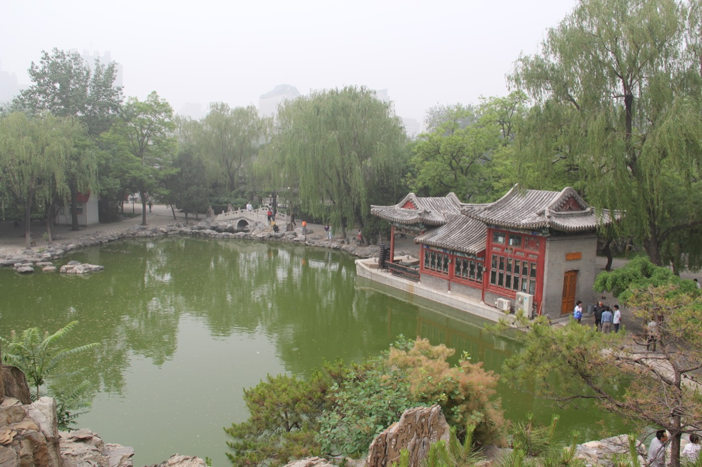
作品：日坛公园 - panoramio (1).jpg
摄影：caoyadong
拍摄日期（来源声明）：2012-05-13
2012年日坛公园的历史实景局部；不代表场所全貌、当前季节、陈列或开放安排。
由来源原图等比例缩小，并进行JPEG压缩（质量参数72）；未裁切、重绘、去人物或换背景。成品为1280×853。页面按容器缩放、裁显；完整原图见来源。
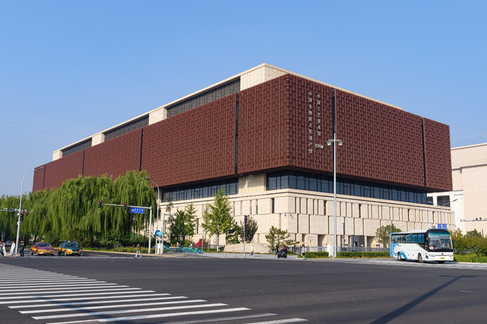
作品：China National Arts and Crafts Museum (20260917153802).jpg
摄影：N509FZ
拍摄日期（来源声明）：2026-09-17
2026年中国工艺美术馆（中国非物质文化遗产馆）的历史实景局部；不代表场所全貌、当前季节、陈列或开放安排。
由来源原图等比例缩小，并进行JPEG压缩（质量参数72）；未裁切、重绘、去人物或换背景。成品为1280×853。页面按容器缩放、裁显；完整原图见来源。
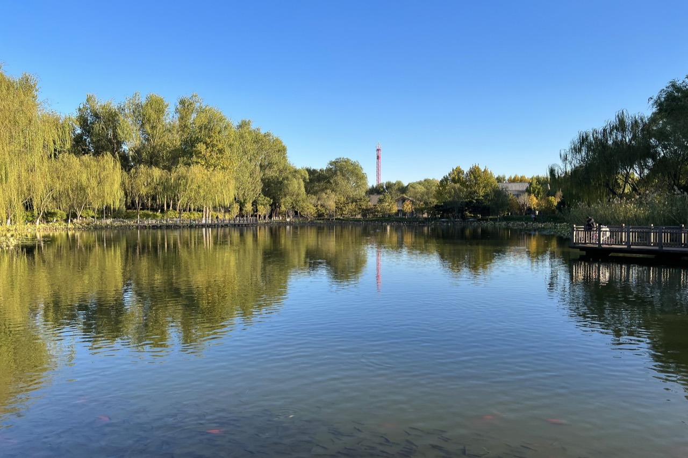
作品：South lake of Naturally Formed Two Splendors, GCFP (20221016162156).jpg
摄影：N509FZ
拍摄日期（来源声明）：2022-10-16
2022年大运河森林公园的历史实景局部；不代表场所全貌、当前季节、陈列或开放安排。
由来源原图等比例缩小，并进行JPEG压缩（质量参数72）；未裁切、重绘、去人物或换背景。成品为1280×853。页面按容器缩放、裁显；完整原图见来源。


.jpg){kind=link}
.jpg){kind=link}

.jpg){kind=link}


.jpg){kind=link}
.jpg){kind=link}
.jpg){kind=link}


.jpg){kind=link}

.jpg){kind=link}
.jpg){kind=link}
.jpg){kind=link}